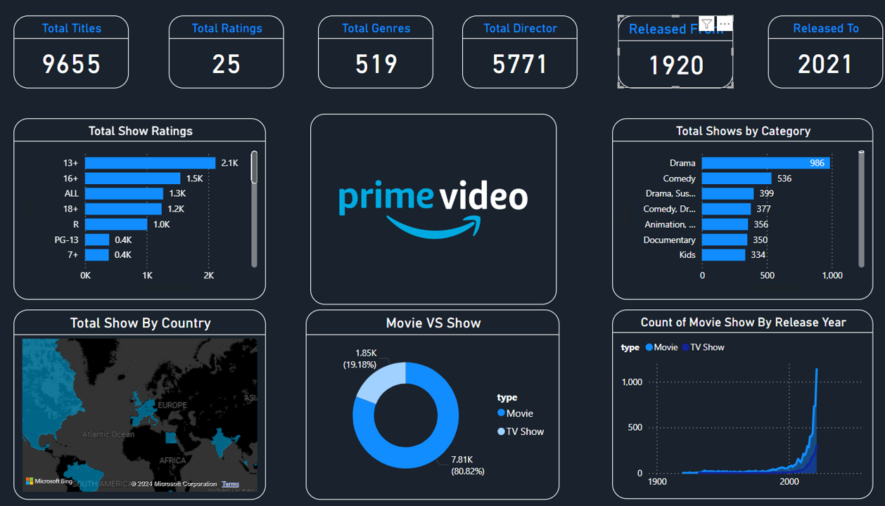

Data Analytics | Business Analysis | Generative AI | Project Coordination | Technical Documentation | Technical Training
Combining analytical expertise, technology and business understanding to deliver meaningful insights, improve processes and support informed decision-making.
Explore My Portfolio Connect on LinkedInI am an analytical and technically skilled professional with over eight years of experience in data analytics, business intelligence, technical education, documentation and process improvement.
Currently, I support telecommunications project coordination at AZ3, working with project requirements, material records, data reconciliation, Excel reporting and stakeholder communication.
At Georgian College, I deliver practical technical instruction in Big Data Analytics, Business Intelligence, Data Visualization and Advanced Databases. My work includes analytical projects, curriculum development, technical documentation and AI-assisted content development.
My professional interests include business analysis, generative AI, workflow automation, data-driven decision-making and continuous process improvement.
Location: Barrie, Ontario, Canada

Developed a Power BI dashboard to analyze Amazon Prime Video content, including movies, TV shows, ratings, categories, geographical distribution and release trends.
Independent portfolio project. Power BI Desktop is required to explore the downloadable report.
Power BI reporting, interactive dashboards, KPI visualization and business insights.
Power BI DAX Power QueryData cleaning, transformation, exploratory analysis and statistical visualization.
Python Pandas NumPyDatabase querying, data extraction, aggregation and analytical reporting.
SQL SQL Server SSMSPrompt development, AI-assisted technical documentation and generated content validation.
Claude Copilot Prompt EngineeringPortfolio development area focused on automating repetitive business processes.
Power Automate Excel SharePointRequirements validation, data reconciliation, operational reporting and process improvement.
Excel Business AnalysisIndividual project demonstrations and case studies will be added as they are prepared.
September 2026 – Present
September 2018 – Present
March 2026 – June 2026
MCA | India
World Education Services (WES), Canada assessment.
BCA | India
World Education Services (WES), Canada assessment.
LinkedIn Learning | March 2026
LinkedIn Learning | April 2026
LinkedIn Learning | November 2025
LinkedIn Learning | March 2026
LinkedIn Learning | April 2026
Open to professional opportunities in Data Analytics, Business Intelligence, Business Analysis, AI & Automation, Project Coordination and Technical Training.
Barrie, Ontario, Canada
Email Me LinkedIn Profile